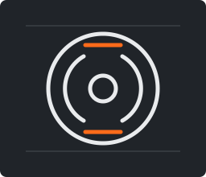
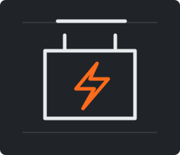
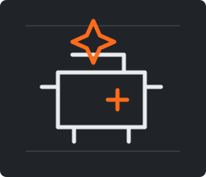
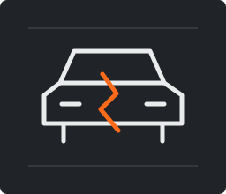

Додаткові послуги
Додаткові послуги для вашого автомобіля
Крім регулярного обслуговування, ми пропонуємо низку інших послуг. Серед них — налаштування й калібрування окремих систем допомоги водієві відповідно до моделі й оснащення автомобіля, регулювання та калібрування фар, діагностика ходової частини, регулювання кутів установлення коліс, ремонт гальмівних дисків тощо.
-

Діагностика ODIS
Діагностика ODIS, аналіз виміряних значень і фахові вимірювання відповідно до прояву несправності.
-

Спеціалізована діагностика
Ендоскопія, мікроскопічний контроль рідин, вимірювання CO₂ і тиску, димова та УФ-діагностика залежно від проявів несправності.
-

Регулювання та калібрування систем допомоги водієві
Front Assist, Rear Assist, Lane Assist, Side Assist, адаптивний круїз-контроль, Area View, лазерний сканер, Night Vision, проєкційний дисплей (Head-up Display)
-

-

Діагностика підвіски
Перевірка амортизаторів і гальм, зокрема електричного стоянкового гальма, та виявлення люфтів на обох осях.
-

Регулювання кутів установлення коліс
Для регулювання кутів установлення коліс використовуємо обладнання виробника з 3D-технологією.
-

Проточування гальмівних дисків
Ми проточуємо гальмівні диски безпосередньо на автомобілі без їх демонтажу.
-

Обслуговування задніх барабанних гальм електромобілів
Перевірка й обслуговування задніх барабанних гальм. Точне базове регулювання пристроєм серії T10635 за сервісною документацією конкретного автомобіля.
-

Заміна сайлентблоків підрамника та важелів підвіски
Професійна заміна сайлентблоків підрамника та важелів підвіски спеціальними пристроями VAS. На окремих автомобілях заміна можлива без демонтажу всього вузла підвіски.
-

Заміна ременя ГРМ та ланцюга
Професійна заміна ременів і ланцюгів ГРМ відповідно до сервісних процедур виробника.
-

Трансмісії DSG і S tronic
Комплексна діагностика, обслуговування та механічний ремонт автоматичних коробок передач DSG і S tronic.
-

Обслуговування гібридних та електромобілів
Професійне обслуговування, регулярні сервісні перевірки та діагностика гібридних та електромобілів VW Group.
-

Очищення двигуна від нагару
Хімічна та механічна декарбонізація бензинових і дизельних двигунів, включаючи видалення нагару з впускних клапанів.
-

Ремонт і заправлення кондиціонера
Визначаємо причину недостатнього охолодження та пропонуємо ремонт; саме дозаправлення холодоагентом не усуває витік.
-

Підготовка та організація чеського огляду придатності до експлуатації (STK).
Ми перевіряємо та готуємо ваш автомобіль до перевірки придатності до експлуатації в Чехії (STK) або організовуємо весь процес від вашого імені.
-

Огляд автомобіля після ДТП
Ми оцінюємо видимі пошкодження автомобіля, перевіряємо доступні елементи безпеки й технічні компоненти та рекомендуємо подальші дії.